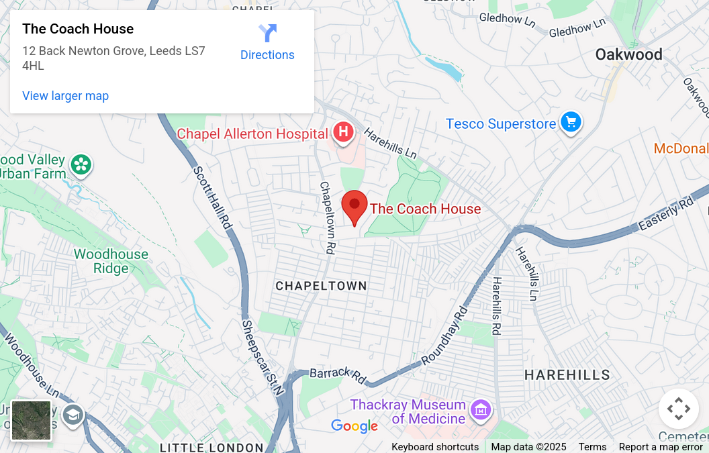
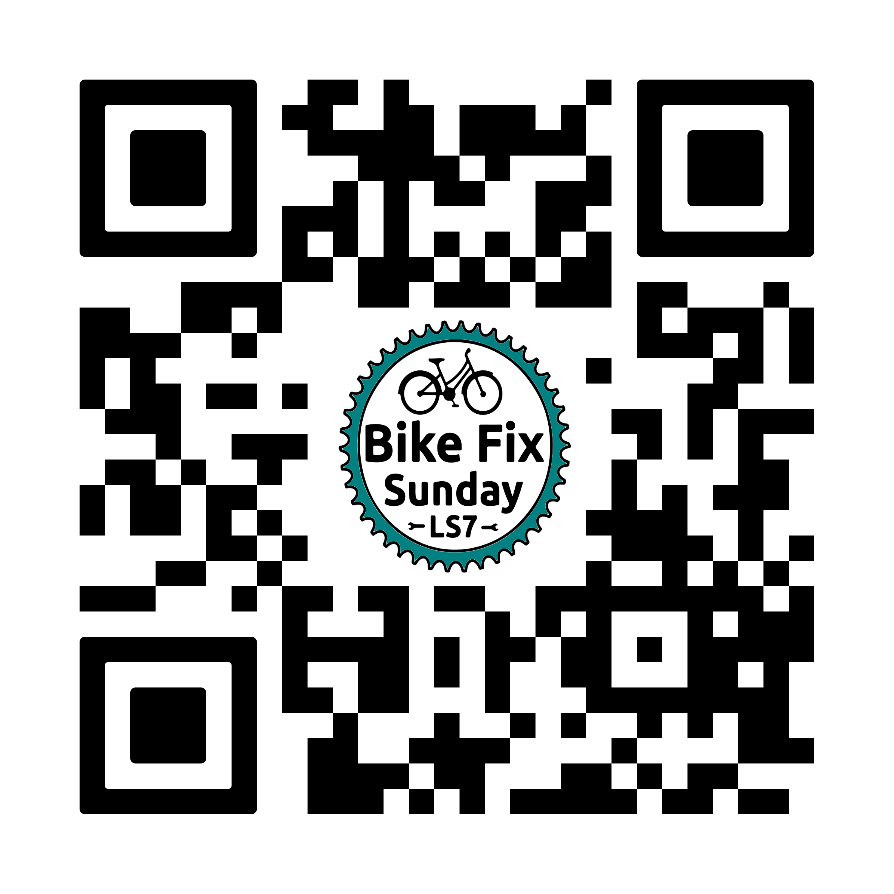

When: The last Sunday of every month, 2-4pm.
Where: The Coach House, 12 Back Newton Grove, Chapeltown, Leeds LS7 4HL.
Cost: £5 min recommended donation.
Why: Learn to fix your bike with guidance from volunteer mechanics.
FB: Bike Fix Sunday LS7 | Email: sundayservicels7@gmail.com | Web: bikefs.org
Since 2020 we have been helping to fix bikes in the local community. Bring your bike along to one of our sessions and we'll try to help you fix it. We have affordable refurbished bikes for sale: check our Facebook to see what we currently have selling. Under 16s must be accompanied by an adult. See you down there!


Scan QR code for our website
Volunteer mechanics provide guidance only; all repairs and cycling are undertaken at your own risk.